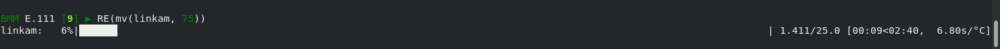

Ophyd Class
Contents
Ophyd Class¶
To start, we want to derive our Linkam class from Ophyd’s PVPositioner class. This will allow us to treat the Linkam stage like any other positioner. Specifically, this will allow us to move to a new temperature in the same way that we move a translation stage. At the bsui terminal, this means we will get a progress bar and a time estimate for completion of the move. Most importantly, the move will block plan execution until the change of temperature is completed.
Class definition¶
Here’s the boilerplate for the top of the class definition.
1 from ophyd import Component as Cpt, EpicsSignal, EpicsSignalRO
2 from ophyd import PVPositioner
3
4 class Linkam(PVPositioner):
5 '''An ophyd wrapper around the Linkam T96 controller
6 '''
This is then followed by the list of components.
Following the example from the Ophyd documentation, we
need to add a readback and a setpoint attribute so the
positioner can know where it is and where it’s going.
1 from ophyd import Component as Cpt, EpicsSignal, EpicsSignalRO
2 from ophyd import PVPositioner
3
4 class Linkam(PVPositioner):
5 '''An ophyd wrapper around the Linkam T96 controller
6 '''
7
8 readback = Cpt(EpicsSignalRO, 'TEMP')
9 setpoint = Cpt(EpicsSignal, 'SETPOINT:SET')
10 status_code = Cpt(EpicsSignal, 'STATUS')
Status code¶
The tricky part is specifying the done signal. There is not a PV
which specifically and only reports when the temperature is at the set
point. Instead, it is buried in status_code (which I have renamed
from the last section, for reasons which will become apparent shorty).
Doing this:
linkam.status_code.get()
returns a float like 4.0 or 6.0. Kind of confusing…
The way to deal with this number is to first convert it to an integer, then interpret it in a bit-wise context.
bit |
meaning |
|---|---|
1 |
an error has occurred |
2 |
at set point |
4 |
heater is on |
8 |
LN2 pump is on |
16 |
LN2 pump is in auto mode |
Suppose this is a pythonically True statement:
int(linkam.status_code.get()) & 2 == 2
This means that the temperature is at its set point. So, if
linkam.status_code is 6.0, then the 2-bit is set and the
temperature is at its set point. As the temperature is ramping up,
linkam.status_code would be 4.0. The 2-bit is unset, indicating
that the temperature is not at the set point.
Done signal¶
Here is how we encode this in Ophyd. We need to create a
DerivedSignal which is used to extract the 2 bit from the
status_code attribute.
1 from ophyd import Component as Cpt, EpicsSignal, EpicsSignalRO
2 from ophyd import PVPositioner
3
4 from ophyd.signal import DerivedSignal
5
6 class AtSetpoint(DerivedSignal):
7 '''A signal that does bit-wise arithmetic on the Linkam's status code'''
8 def __init__(self, parent_attr, *, parent=None, **kwargs):
9 code_signal = getattr(parent, parent_attr)
10 super().__init__(derived_from=code_signal, parent=parent, **kwargs)
11
12 def inverse(self, value):
13 if int(value) & 2 == 2:
14 return 1
15 else:
16 return 0
17
18 def forward(self, value):
19 return value
20
21
22 class Linkam(PVPositioner):
23 '''An ophyd wrapper around the Linkam T96 controller
24 '''
25
26 readback = Cpt(EpicsSignalRO, 'TEMP')
27 setpoint = Cpt(EpicsSignal, 'SETPOINT:SET')
28 status_code = Cpt(EpicsSignal, 'STATUS')
29 done = Cpt(AtSetpoint, parent_attr = 'status_code')
In short, linkam.done will return 0 when the temperature is not at
the set point and 1 when it has reached the set point. This class now
meets enough of the semantic needs of the PVPositioner class that it
can be used in a bluesky plan.
Linkam as a positioner¶
With this, it is now possible to do
RE(mv(linkam, 75))
and see something like this at the bsui terminal:
{kind=link}

Fig. 3 A bluesky progress bar as the Linkam stage heats up.¶
To use this:
linkam = Linkam('XF:06BM-ES:{LINKAM}:', name='linkam', egu='°C', settle_time=10, limits=(-169.0,500.0))
The egu string (i.e., engineering units) is used in the progress
bar that is displayed during a move.
The settle_time is configurable at the bsui command line or in a
measurement plan:
linkam.settle_time = 120
This sets an amount of time to pause upon seeing the temperature reach
the set point to allow the sample to equilibrate at the new
temperature. The mv() command will not return until after the
settling time has elapsed. The units are seconds.
The limits define the bounds of temperature, like soft limits for
a motor. The units are degrees C.